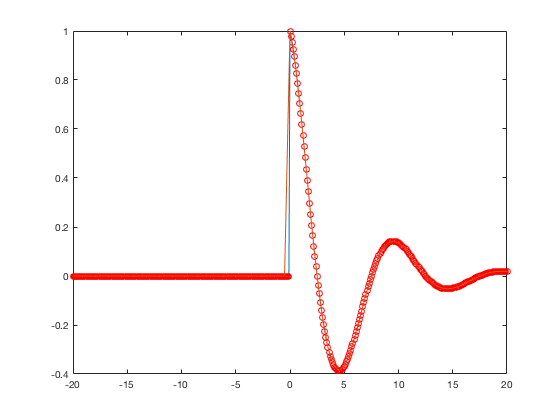
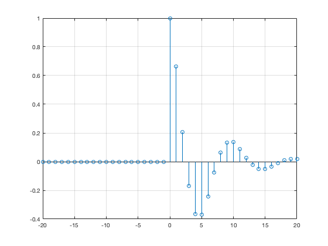
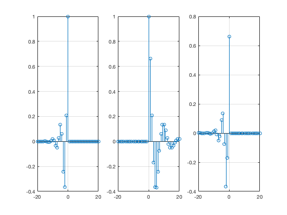
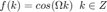
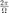
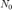
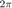
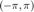
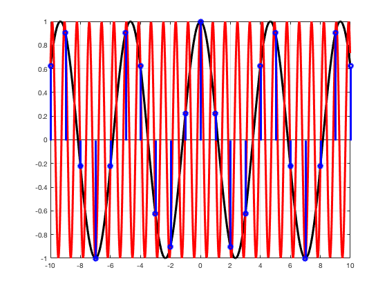

Práctica 4: Señales en tiempo discreto
Contents
Señales en tiempo discreto
f = inline('exp(-n/5).*cos(pi*n/5).*(n>=0)','n')
f =
Inline function:
f(n) = exp(-n/5).*cos(pi*n/5).*(n>=0)
Es importante tener claro que la representación de señales continuas es una computadora (digital) es simplemente una "idea",
figure
t=-20:0.1:20;
t1=-20:0.5:20;
plot(t,f(t),t,f(t),'ro',t1,f(t1))
 ¿Qué se podría concluir de la figura anterior? Siempre estamos gráficando señales en tiempo discreto, es decir, como suele ser en ingeniería, hay un mapeo, entre el fenomeno, la abstracción y la técnologia de implementación.
Por convención, trazamos lineas verticales a las alturas, esto ya esta implementado, en esta herramienta,
figure
n = -20:20;
stem(n,f(n))
grid on
 Tenemos varias obervaciones, respecto a las operaciones de las señales en tiempo discreto, observemos el siguiente ejemplo:
figure subplot(1,3,1) stem(n,f(-2*n)) grid on subplot(1,3,2) stem(n,f(n)) grid on subplot(1,3,3) stem(n,f(-2*n+1)) grid on
Transformación de las señales
Traslaciones horizontales
- Similares a su contraparte continua
Escalamiento horizontal
- Se diezma a la señal (afectamos), cuando comprimimos
- Cuando expandimos, tenemos la señal completa, varios ceros, que la la interpolacion puede ayudar a reconstruir.
Escalamientos verticales
- Igual a la interpretación en tiempo continuo
Traslaciones verticales
- De forma equivalente a su contraparte en tiempo continuo
Función coseno discreto

- Solo es periodica cuando  es racional y el periono  es el primer multiplo entero de este número
- Si la diferencia de frecuencias de dos cosenos es un multiplo de  entonces son la misma señal es decir solo hay señales diferentes en un rango de , en particular el intervalo  lo llamaremos el rango fundamental de frecuencias
- En particular podemos utilizar solo la mitad del rango fundamental de frecuencias.
figure t = -10:pi/100:10; f1t = cos(3*pi/7*t); f2t = cos(17*pi/7*t); plot(t,f1t,'k','LineWidth',3); hold on plot(t,f2t,'r','LineWidth',3) grid on k= -10:10; f1k = cos(3*pi/7*k); f2k = cos(17*pi/7*k); stem(k,f1k,'y','LineWidth',3) stem(k,f2k,'b','LineWidth',3) hold off
Entregables
Se revisa una publicación (html) de la práctica
(20 puntos) Programar una función Calcular la energia de una señal en tiempo discreto. La función recibe dos paramétros de entrada: el vector de tiempo y las alturas asignadas, la función regresa la energia de la señal y despliega la gráfica de la señal. Debes de usar un ciclo for
(20 puntos) Resuelve el problema 3.1.1 b) de Lathi
(20 puntos) Programar una función Calcular la energia de una señal en tiempo discreto. La función recibe dos paramétros de entrada: el vector de tiempo y las alturas asignadas, la función regresa la energia de la señal y despliega la gráfica de la señal. Debes de usar operaciones punto a punto y la función sum (que ya esta implementada en Matlab)
(20 puntos) Resuelve el problema 3.1.1 b) de Lathi
(20 puntos) Gráficas Resuelve el problema 3.2.3 de Lathi
El códico de esta publicación lo puedes encontrar en el siguiente enlace